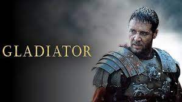

Gladyatör (Latince: gladiator: kılıç ustası silahşor, gladius: kılıç), Eski Roma'da genellikle savaş esirleri ve kölelerden oluşturulan, Romalı insanları eğlendirmek, Roma halkını askerliğe, dövüşlere ve olası savaşlara hazırlamak amacı ile halkın seyirciliği refakatinde birbirleri veya vahşi hayvanlarla dövüşmek zorunda bırakılan insanlardır. Gladyatörlerin her biri farklı silahlara sahiptir. Hemen her gladyatör elinde bir kılıç veya mızrak, başında ağır metalden siperli miğferle ve üstü çıplak olarak dövüşürdü.
